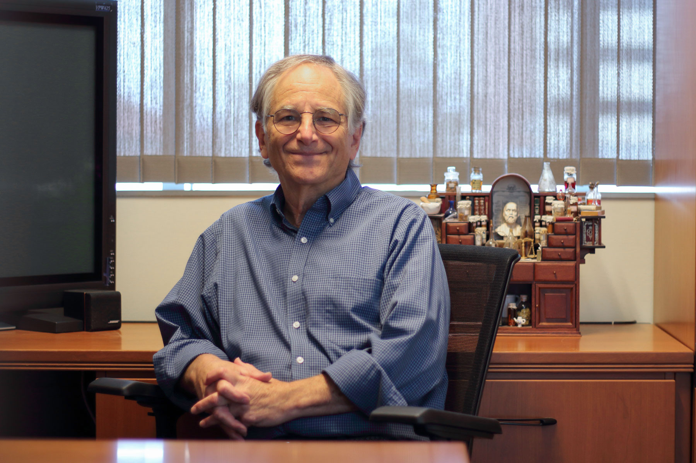

Нобелевские
лауреаты в
области
информатики
Премия Тьюринга
Учреждена Ассоциацией вычислительной
техники в честь выдающегося английского
учёного Алана Тьюринга, получившего
первые глубокие результаты относительно
вычислимости за несколько лет до появления
первых электронных вычислительных машин.
Ежегодно вручается одному или нескольким
специалистам в области информатики и
вычислительной техники, чей вклад в
этой сфере оказал сильное и продолжительное
влияние на компьютерное сообщество.
Премия может быть присуждена одному
человеку не более одного раза. В сфере
информационных технологий премия
Тьюринга имеет статус, аналогичный
Нобелевской премии в академических
дисциплинах.
Эдлман Леонард Макс
Эдлман родился в Калифорнии в 1945 году и вырос в Сан
-Франциско. После школы он поступил в Калифорнийский
университет в Беркли и в 1968 году получил степень бакалавра
по математике. После присуждения этой ученой степени
работал программистом в «Bank of America». В Беркли
он получил степень доктора философии по электротехнике и
компьютерным наукам в 1976 году и написал диссертацию
«Теоретические аспекты вычислительной сложности». После
этого Адлеман устроился на работу в Массачусетский
Технический Институт на кафедру математики. Изначально он
был нанят как ассистент, затем, в 1977 году, стал помощником
профессора математики и, наконец, в 1979 году адъюнкт-
профессором. В 1980 году Эдлман занял должность в
Университете Южной Калифорнии на факультете компьютерных
наук. В 1983 году стал профессором, а в 1985 году — получил
звание профессора Генри Сальватори компьютерных наук.
Одновременно с этим он являлся профессором молекулярной
биологии. На протяжении своего карьерного пути основной
сферой интереса и исследований Эдлмана была теоретическая
компьютерная наука, в частности, сложность некоторых
теоретических проблем, которые и стали основой для
некоторых его известных работ по криптографии. Он был одним
из разработчиков криптосистемы RSA. Данный алгоритм
шифрования был разработан ими в 1976 году в Массачусетском
технологическом институте. За свой вклад в это изобретение
Эдлман, вместе с Рональдом Ривестом и Ади Шамиром, стал
обладателем Премии Канеллакиса 1996 года и премии Тьюринга
2002 года

Дэвид Паттерсон
Дэвид Паттерсон - американский учёный в области
информатики, разработчик микропроцессоров, профессор
информатики в Калифорнийском университете в Беркли с
1977 года, лауреат премии Тьюринга. Известен вкладом в
проектирование RISC-процессоров, в том числе, как
руководитель проекта Berkeley RISC и автор термина «RISC».
Обучался в Калифорнийском университете в Лос-Анджелесе,
получил степень бакалавра в 1969 году, магистра — в 1970
году, в 1976 году получил степень PhD под руководством
Дэвида Мартина (David F. Martin) и Джеральда
Эстрина.Некоторое время был председателем факультета
информатики Калифорнийского университет в Беркли,
руководил ассоциацией Computer Research. Консультировал
проект SPARC. Входил совет по информационным
технологиям при президенте США (PITAC) в 2003—2005 годах.
Избирался президентом Association for Computing Machinery
в 2004—2006 годах. Действительный член Американской
ассоциации содействия развитию науки.
В 1990-е — 2000-е годы разработал несколько вариантов
RISC-архитектур, включая учебную DLX и перспективную
свободную RISC-V, изучал вопросы интеграции памяти и
процессоров.
Отмечен многочисленными премиями, среди них: медаль
Джона фон Неймана (2000), C&C Prize (2004), премия Эккерта
— Мокли (2008), премия Тьюринга (2017).
Джек Донгарра
Джек Донгарра - американский учёный, математик,
специалист в области информатики. Профессор кафедры
электротехники и информатики в Университете Теннесси,
директор-основатель Инновационной вычислительной
лаборатории в Университете Теннесси, заслуженный
научный сотрудник отдела информатики и математики в Ок-
Риджской национальной лаборатории. Лауреат премии
Тьюринга (2021).
В 2004 году был удостоен премии IEEE Sid Fernbach Award за
вклад в применение высокопроизводительных компьютеров
с использованием инновационных подходов. В 2008 году он
был удостоен первой медали IEEE за выдающиеся
достижения в области масштабируемых вычислений. В 2010
году Донгарра стал первым лауреатом премии SIAM Activity
Group on Supercomputing Career Prize. В 2011 году он был
удостоен премии IEEE Computer Society Charles Babbage
Award.В 2001 году был избран членом Национальной
инженерной академии США за вклад в численное
программное обеспечение, параллельные и
распределённые вычисления и среды решения проблем.
В 2021 году стал лауреатом премии Тьюринга за
новаторские концепции и методы, которые привели к
изменениям в мире вычислений. Считается, что его
алгоритмы и программное обеспечение способствовали
росту высокопроизводительных вычислений и оказали
значительное влияние на многие области вычислительной
науки от искусственного интеллекта до компьютерной
графики.
Лесли Гэбриел Вэлиант
Лесли Гэбриел Вэлиант — британский и американский
учёный в области теоретической информатики, лауреат
премии Тьюринга 2010 года.
Член Лондонского королевского общества (1991),
Национальной академии наук США (2001).
Окончил Королевский колледж Кембриджа, Имперский
колледж Лондона и Уорикский университет, в котором
получил степень доктора философии по информатике в
1974 году. По окончании учёбы преподавал в университете
Карнеги — Меллон, Лидском и Эдинбургском
университетах. В 1982 году начал преподавать в
Гарвардском университете, в котором и работает по
состоянию на 2014 год.
Занимается исследованиями
в области теоретической информатики.
Среди работ - важный вклад в теорию
сложности вычислений: определение класса #P-полных
проблем, с помощью которого удалось описать некоторые
свойства перечислений множеств. В области машинного
обучения разработал теорию приближенно правильного
обучения, получившую широкое практическое
распространение. Также работал в областях параллельных
и распределённых вычислений, голографических
алгоритмов.